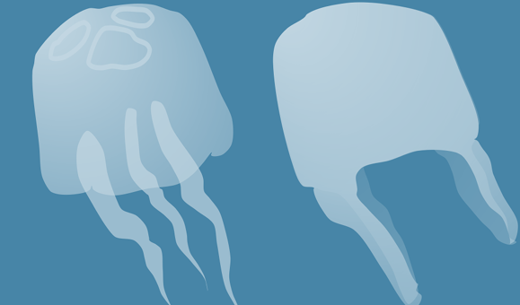
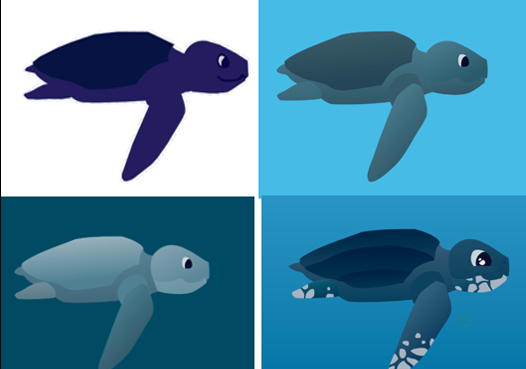

Raising awareness about life below water.
Blue Planet was developed in collaboration with The Blue Planet aquarium in Copenhagen, with the goal of creating an engaging learning experience for children visiting the aquarium.
The project is connected to the UN Sustainable Development Goal 14, Life Below Water, and focuses on one of the challenges facing marine wildlife: plastic pollution in our oceans.
Our team created Tessas Rejse, a tablet-based serious game where children guide a leatherback sea turtle through the ocean. Players collect jellyfish while avoiding plastic bags, helping communicate how easily plastic can become a threat to sea turtles.
Rather than only telling children about the problem, we wanted them to experience it through play. By turning the challenges faced by sea turtles into a simple game, the project aims to make marine pollution more relatable and encourage awareness of how our actions can affect life below water.

